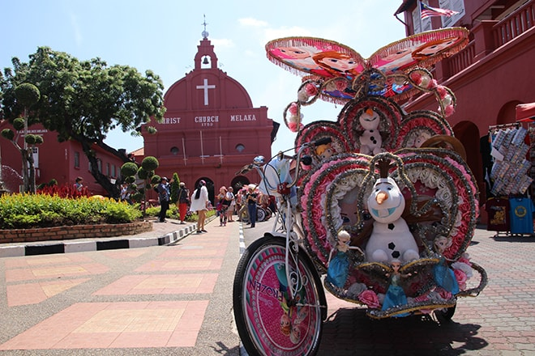
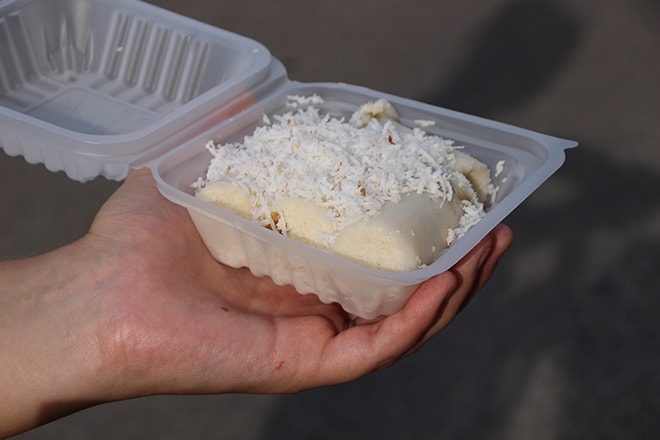
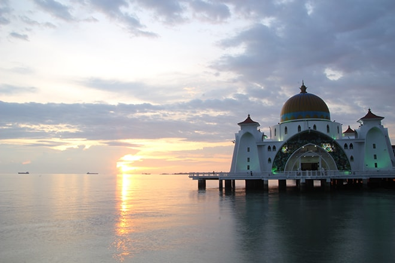
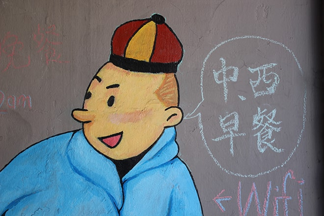
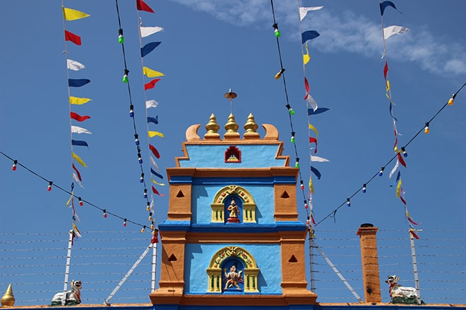
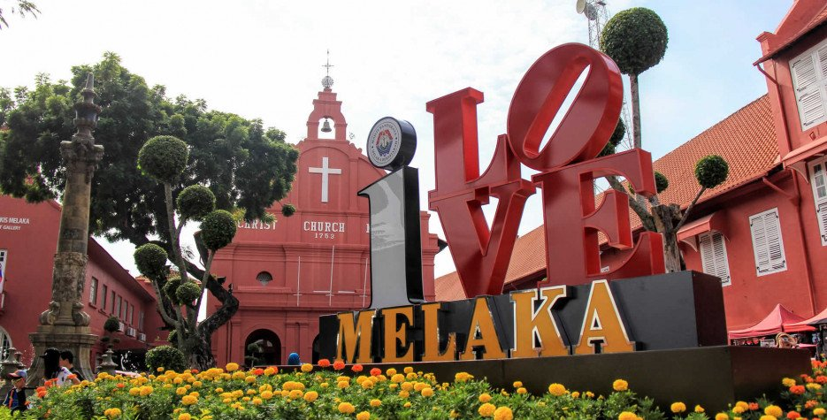

Plus ancienne ville portuaire de Malaisie, Malacca a longtemps joué un rôle important de part sa localisation. Malacca se situe entre Kuala Lumpur et Singapour. Son centre-historique est classé au Patrimoine Mondial de l’UNESCO depuis 2008
Malacca a été colonisée successivement par les Portugais, les Hollandais puis par l’Empire Britannique. Ces 3 pays ont laissé des traces de leur colonisation dans Malacca. Ajoutez à cela, les Chinois, les Indiens, les Musulmans, les Malais et vous avez un sacré mélange de cultures. Et bien c’est ce mélange de cultures qui caractérise Malacca. D’une rue à une autre, le décor change complètement. Enfin, pendant 2 jours à visiter Malacca, nous avons eu l’impression de voyager dans plusieurs pays à la fois.
Tout d’abord, la balade dans le Night Market local est l’occasion idéale pour goûter à l’une des spécialités culinaires de Malacca : le Gula Melaka. Le Gula Melaka est sucre brun issu de la fleur de noix de coco, il se mange sous différente forme et avec différents accompagnements. Dans notre cas, sous forme de roulé au tapioca avec de la noix de coco. Le résultat est assez surprenant ! Sachez que le Night Market a lieu tous les mercredis de 17h à 20h autour de Jalan Pelanduk Puteh. Après une petite demi-heure sur le marché, nous prenons la direction de Malacca Island.
Malacca Island abrite l’un des joyaux de Malacca : la mosquée Strait (Masjid Selat). Une mosquée flottante qui ressemble énormément au Palais d’Aladin . Très belle de jour, elle est sublime de nuit !
Au moment du coucher du soleil, la mosquée s’illumine de vert et les fidèles accourent à l’appel de la prière. Un magnifique spectacle avec, comme toile de fond; la mer, le soleil qui se couche et l’appel à la prière.
Chinatown, une petite dizaine de rues forment ce quartier organisé autour de Jonker Street (la rue principale du quartier chinois de Malacca). Malgré le fait que le quartier ne soit pas entièrement piéton, il est plutôt agréable de s’y promener. L’architecture ressemble à celle de Chine !
Parmi les incontournables du quartier chinois de Malacca, il y a Jalan Tun Tan Cheng Lok Street, 8 Heeren Street Heritage House et Cheng Hoon Teng Temple

Jalan Tukang Besi Street est à ne pas manquer également. Elle a la particularité d’abriter sur moins de 200 mètres : un temple chinois, un temple indien et une mosquée. Comme dans le reste du centre historique de Malacca, il y a un nombre impressionnant de musées (payants) dans Chinatown. Enfin, c’est dans ce quartier que se trouve la majorité des hôtels et auberges.
Dutch Square est le paysage carte postale de Malacca / l’incontournable de Malacca. Une petite place avec une fontaine et des bâtiments tous rouges (musées, église, Tour de l’horloge, …). Impossible de visiter Malacca sans passer par Dutch Square ou la place « rouge » de Malacca.
